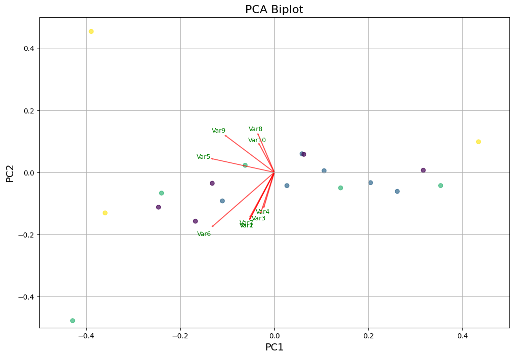
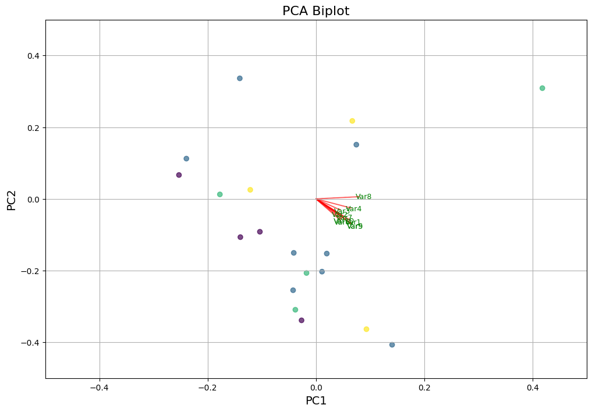

Exploratory Analysis I: Using PCA to identify effort dimensions
Overview
In this notebook, we will use Principal Component Analysis (PCA) to identify the most relevant planes (components) of effort among the features in the dataset(s) we created in the previous script. We do this paralel to extreme gradient boosting (XGBoost, see ?@sec-xgboost) because unlike PCA, XGBoost does not prevent from cummulating most relevant features that are correlated, i.e., they likely explain similar dimension of effort. To increase interpretative power of our analysis, we will combine these two methods to identify the most relevant features within the most relevant dimensions (i.e., components) of effort.
Note that the current version of the script is used with data only from dyad 0. Since this is not sufficient amount of data for any meaningful conclusions, this script serves for building the workflow. We will use identical pipeline with the full dataset, and any deviations from this script will be reported.
Code to prepare the environment
import osimport globimport pandas as pdimport numpy as npimport matplotlib.pyplot as pltfrom sklearn.decomposition import PCAfrom sklearn.preprocessing import StandardScaler, LabelEncodercurfolder = os.getcwd()# This is where our features livefeatures = curfolder +'\\..\\07_TS_featureExtraction\\Datasets\\'dfs = glob.glob(features +'*.csv')
Because within the three distinct modalities - gesture, vocalization, combined - a set of different components could be decisive to characterize effort, we will perform PCA on each modality separately.
# This is gesture datages = [x for x in dfs if'gesture'in x]data_ges = pd.read_csv(ges[0])# This is vocalization datavoc = [x for x in dfs if'vocal'in x]data_voc = pd.read_csv(voc[0])# This is multimodal datamulti = [x for x in dfs if'combination'in x]data_multi = pd.read_csv(multi[0])
PCA: Gesture
Let’s start by cleaning the dataframe. In gesture modality, some of the features are not relevant to the current analysis - those are mainly the ones that are related to acoustics and concept-related information. We will remove them from the dataframe before performing PCA.
Custom functions
# Function to clean the datadef clean_df(df, colstodel):# Delete all desired columns df = df.loc[:,~df.columns.str.contains('|'.join(colstodel))]# Fill NaNs with 0 df = df.fillna(0) # FLAGGED: this we might change, maybe not the best method (alternative: MICE)# Save values from correction_info correction_info = df['correction_info']# Leave only numerical cols, except correction_info df = df.select_dtypes(include=['float64','int64'])# Add back correction_info df['correction_info'] = correction_inforeturn df
# These are answer related columnsconceptcols = ['answer', 'expressibility', 'response']# These are vocalization related columnsvoccols = ['envelope', 'audio', 'f0', 'f1', 'f2', 'f3', 'env_', 'duration_voc', 'CoG']# Concatenate both listscolstodel = conceptcols + voccols# Clean the dfges_clean = clean_df(data_ges, colstodel)ges_clean.head(15)
arm_duration
arm_inter_Kin
arm_inter_IK
arm_bbmv
lowerbody_duration
lowerbody_inter_Kin
lowerbody_inter_IK
lowerbody_bbmv
leg_duration
leg_inter_Kin
...
arm_asymmetry
arm_moment_sum_pospeak_mean
arm_power_pospeak_std
pelvis_moment_sum_change_pospeak_std
pelvis_moment_sum_pospeak_std
arm_moment_sum_pospeak_std
lowerbody_moment_sum_pospeak_std
lowerbody_power_pospeak_std
leg_moment_sum_change_pospeak_std
correction_info
0
3816.0
28.001
29.471
10.348
3244.0
27.815
30.057
9.607
3244.0
27.788
...
-2481.688
-8.489
1.030
0.000
0.646
4.579
0.303
0.000
0.000
c0_only
1
5280.0
28.098
30.942
13.350
5862.0
28.648
31.235
17.882
5862.0
29.740
...
-2803.359
-0.430
1.682
0.213
0.907
1.201
0.409
0.000
0.513
c0_only
2
4302.0
28.401
31.164
10.572
4206.0
28.373
31.096
8.402
4206.0
27.451
...
-6703.803
-6.312
0.348
0.000
1.403
3.175
1.227
0.000
0.000
c0
3
4474.0
27.316
30.376
10.229
4398.0
28.390
32.196
9.064
4398.0
27.665
...
-2827.356
-5.724
1.266
0.000
1.717
5.321
0.124
0.000
0.000
c1
4
4388.0
27.872
31.225
9.748
3782.0
27.458
30.479
8.428
3782.0
27.529
...
-3711.104
-1.685
0.000
0.012
1.045
3.724
0.270
0.000
0.000
c2
5
5852.0
29.417
32.048
10.675
5404.0
29.153
30.545
10.334
5404.0
29.056
...
-8208.505
-8.680
2.553
0.018
0.958
2.077
0.145
0.000
0.000
c0_only
6
2736.0
26.324
27.656
6.547
0.0
0.000
0.000
0.000
0.0
0.000
...
-3005.988
0.645
0.000
0.000
0.000
0.000
0.000
0.000
0.000
c0
7
4256.0
28.675
29.776
8.148
0.0
0.000
0.000
0.000
0.0
0.000
...
-3988.156
-5.168
0.000
0.000
1.373
8.906
0.000
0.000
0.000
c1
8
2516.0
26.234
27.815
7.774
884.0
23.300
25.890
6.598
884.0
23.423
...
-6191.330
-2.486
0.000
0.000
0.909
4.152
0.000
0.000
0.000
c0_only
9
4504.0
28.604
30.892
9.939
4266.0
27.764
29.475
11.045
4266.0
28.404
...
-9892.382
-5.280
1.533
0.000
0.688
1.350
0.390
0.356
0.000
c0
10
5946.0
28.473
30.925
9.779
5136.0
28.712
30.358
9.084
5136.0
28.117
...
-8094.630
-14.464
0.000
0.142
0.512
0.984
0.865
0.000
0.039
c1
11
6100.0
29.300
31.243
10.521
6030.0
29.592
30.960
9.672
6030.0
30.037
...
-6914.443
-4.261
0.850
0.000
0.552
0.636
0.283
0.000
0.000
c2
12
3004.0
26.079
26.368
7.253
2686.0
28.219
27.971
4.870
2686.0
27.750
...
-1630.817
0.000
0.000
0.000
0.000
0.000
0.085
0.000
0.000
c0_only
13
3918.0
28.358
28.936
8.394
3366.0
28.669
28.833
5.086
3366.0
28.617
...
-2136.578
-4.907
0.184
0.460
0.851
1.980
0.855
0.406
1.368
c0
14
3918.0
28.120
29.766
9.343
1692.0
26.370
26.244
4.733
1692.0
24.816
...
-1165.345
-11.533
0.299
0.202
1.278
2.726
0.000
0.140
0.000
c1
15 rows × 325 columns
Now, we first standardize the data and apply PCA to extract principal components. We use custom function PCA_biplot (adapted from here) to visualize the first two principal components. Data points are color-coded on the target variable (correction info) and red arrows represent the contributions of selected variables to the PC.
Custom functions
# Function to plot PCA resultsdef PCA_biplot(score, coeff, labels=None, selected_vars=None): xs = score[:, 0] ys = score[:, 1] n = coeff.shape[0] scalex =1.0/ (xs.max() - xs.min()) scaley =1.0/ (ys.max() - ys.min())# Ensure all arrays have the same length min_length =min(len(xs), len(ys), len(y))# Trim all arrays to the smallest length xs_trimmed = xs[:min_length] ys_trimmed = ys[:min_length] y_trimmed = y[:min_length] # Adjust 'c' values to match plt.figure(figsize=(12, 8)) # Increase figure size# Now plot safely plt.scatter(xs_trimmed * scalex, ys_trimmed * scaley, c=y_trimmed, cmap="viridis", alpha=0.7)# If selected_vars is provided, only plot these variablesif selected_vars isnotNone:for i in selected_vars: plt.arrow(0, 0, coeff[i, 0], coeff[i, 1], color='r', alpha=0.5)if labels isNone: plt.text(coeff[i, 0] *1.15, coeff[i, 1] *1.15, "Var"+str(i +1), color='g', ha='center', va='center', fontsize=9)else: plt.text(coeff[i, 0] *1.15, coeff[i, 1] *1.15, labels[i], color='g', ha='center', va='center', fontsize=9)else:for i inrange(n): plt.arrow(0, 0, coeff[i, 0], coeff[i, 1], color='r', alpha=0.5)if labels isNone: plt.text(coeff[i, 0] *1.15, coeff[i, 1] *1.15, "Var"+str(i +1), color='g', ha='center', va='center', fontsize=9)else: plt.text(coeff[i, 0] *1.15, coeff[i, 1] *1.15, labels[i], color='g', ha='center', va='center', fontsize=9)# Zoom into the plot by narrowing the axis limits plt.xlim(-0.5, 0.5) # Adjust the range as needed plt.ylim(-0.5, 0.5) # Adjust the range as needed plt.xlabel("PC1", fontsize=14) plt.ylabel("PC2", fontsize=14) plt.grid() plt.title("PCA Biplot", fontsize=16) plt.show()
# Prepare dataX = ges_clean.iloc[:, :-1].values # All columns except the last as featuresy = ges_clean.iloc[:, -1].values # Last column as target variable# Convert categorical target to numeric if necessaryif y.dtype =='object'or y.dtype.name =='category': le = LabelEncoder() y = le.fit_transform(y) # Converts categorical labels into numeric labels# Scale the datascaler = StandardScaler()X = scaler.fit_transform(X) # PCA transformationpca = PCA()x_new = pca.fit_transform(X)# For intelligibility, let's select only plot some variablesselected_vars = [0, 1, 2, 3, 4, 5, 6, 7, 8, 9, 10] # Call the function. Use only the 2 PCs.PCA_biplot(x_new[:, 0:2], np.transpose(pca.components_[0:2, :]), selected_vars=selected_vars)
So we have really few data, therefore even the first principal component explains only 38% of the variance, second 13% and third 11%. But we will be focusing on the first three principal components, as they together explain at least 50% of the variance
Now we can check the most important features. The larger the absolute value of the Eigenvalue, the more important the feature is for the principal component.
# Number of principal componentsn_pcs =3# Feature names (excluding target column)feature_names = ges_clean.columns[:-1] # Create storage for the ordered feature names and loadingsresults_dict_ges = {}for i inrange(n_pcs):# Get all features sorted by absolute loading values sorted_indices = np.abs(pca.components_[i]).argsort()[::-1] sorted_features = feature_names[sorted_indices] # Feature names sorted_loadings = pca.components_[i, sorted_indices] # Loadings# Store in dictionary results_dict_ges[f'PC{i+1}'] = sorted_features.values results_dict_ges[f'PC{i+1}_Loading'] = sorted_loadings# Convert dictionary to DataFrameresults_df_ges = pd.DataFrame(results_dict_ges)results_df_ges.head(20)
PC1
PC1_Loading
PC2
PC2_Loading
PC3
PC3_Loading
0
bbmv_total
0.088552
leg_moment_sum_change_integral
0.122350
lowerbody_angAcc_sum_Gstd
-0.113851
1
lowerbody_bbmv
0.088311
lowerbody_moment_sum_change_integral
0.119478
pelvis_moment_sum_integral
0.110988
2
leg_bbmv
0.088311
leg_moment_sum_range
0.118334
lowerbody_power_pospeak_n
-0.110353
3
leg_angSpeed_sum_range
0.086581
leg_moment_sum_Gstd
0.117526
numofArt
0.106303
4
arm_bbmv
0.086062
leg_moment_sum_pospeak_std
0.117384
lowerbody_power_range
-0.105257
5
lowerbody_accKin_sum_pospeak_n
0.085862
leg_moment_sum_change_Gmean
0.111512
leg_angAcc_sum_integral
0.104674
6
lowerbody_speedKin_sum_pospeak_n
0.085862
leg_moment_sum_change_pospeak_n
0.110876
lowerbody_power_Gstd
-0.104521
7
leg_angSpeed_sum_Gstd
0.084579
arm_angSpeed_sum_Gstd
-0.106664
lowerbody_angAcc_sum_range
-0.104089
8
head_speedKin_sum_pospeak_std
0.083995
spine_moment_sum_integral
-0.106053
spine_moment_sum_change_integral
-0.103468
9
head_accKin_sum_pospeak_std
0.083995
lowerbody_moment_sum_change_range
0.105053
leg_angJerk_sum_integral
0.103358
10
head_bbmv
0.083770
arm_angSpeed_sum_range
-0.104518
spine_moment_sum_Gmean
-0.103014
11
leg_angJerk_sum_range
0.083486
head_angSpeed_sum_pospeak_std
0.102664
lowerbody_angSpeed_sum_Gstd
-0.102256
12
leg_speedKin_sum_range
0.083428
head_angAcc_sum_pospeak_std
0.102664
leg_angSpeed_sum_integral
0.101966
13
head_accKin_sum_range
0.082507
spine_moment_sum_Gmean
-0.102477
spine_moment_sum_integral
-0.101497
14
head_jerkKin_sum_integral
0.082302
spine_moment_sum_change_Gstd
0.101442
pelvis_moment_sum_Gmean
0.100055
15
leg_duration
0.082105
lowerbody_moment_sum_Gstd
0.101287
leg_angJerk_sum_pospeak_mean
0.099828
16
lowerbody_duration
0.082105
lowerbody_moment_sum_change_Gstd
0.101006
lowerbody_angSpeed_sum_range
-0.099430
17
head_accKin_sum_Gstd
0.082004
lowerbody_moment_sum_range
0.100636
spine_moment_sum_change_Gmean
-0.099217
18
lowerbody_accKin_sum_range
0.081567
lowerbody_moment_sum_change_Gmean
0.100220
pelvis_moment_sum_change_Gstd
-0.098610
19
leg_angAcc_sum_range
0.081196
head_moment_sum_change_Gmean
0.099953
leg_angJerk_sum_Gmean
0.097263
Now we have dataframe for gesture modality where each column represents a principal component (PC1-PC3) and each row represents a feature. The values in the dataframe are the loadings of the features on the principal components. The loadings are the correlation coefficients between the features and the principal components. The higher the absolute value of the loading, the more important the feature is for the principal component. The dataframe is sorted by the absolute value of the loadings in descending order.
Save the top contributors as a file so that we can load it in for the XGBoost analysis. We will also save the clean data which we can use for XGBoost modeling too.
# Save top contributorsresults_df_ges.to_csv(curfolder +'\\datasets\\PCA_top_contributors_ges.csv', index=False)# Save clean datages_clean.to_csv(curfolder +'\\datasets\\ges_clean_df.csv', index=False)
PCA: Vocalizations
In the following repetitions, we will use custom function pca_analysis which does all the steps we performed previously for gesture modality in one go
Custom PCA function
def pca_analysis(df_clean):# Prepare data X = df_clean.iloc[:, :-1].values # All columns except the last as features y = df_clean.iloc[:, -1].values # Last column as target variable# Convert categorical target to numeric if necessaryif y.dtype =='object'or y.dtype.name =='category': le = LabelEncoder() y = le.fit_transform(y) # Converts categorical labels into numeric labels# Scale the data scaler = StandardScaler() X = scaler.fit_transform(X) # PCA transformation pca = PCA() x_new = pca.fit_transform(X)# Select few variables selected_vars = [0, 1, 2, 3, 4, 5, 6, 7, 8, 9] print('Biplot for the first 2 PCs:') PCA_biplot(x_new[:, 0:2], np.transpose(pca.components_[0:2, :]), selected_vars=selected_vars) PC1explained = pca.explained_variance_ratio_[0]*100 PC2explained = pca.explained_variance_ratio_[1]*100 PC3explained = pca.explained_variance_ratio_[2]*100print('PCs explained variance:')print(f'PC1: {PC1explained:.2f}%')print(f'PC2: {PC2explained:.2f}%')print(f'PC3: {PC3explained:.2f}%')# Getting most contributing features n_pcs =3# Feature names (excluding target column) feature_names = df_clean.columns[:-1] # Create storage for the ordered feature names and loadings results_dict = {}for i inrange(n_pcs):# Get all features sorted by absolute loading values sorted_indices = np.abs(pca.components_[i]).argsort()[::-1] sorted_features = feature_names[sorted_indices] # Feature names sorted_loadings = pca.components_[i, sorted_indices] # Loadings# Store in dictionary results_dict[f'PC{i+1}'] = sorted_features.values results_dict[f'PC{i+1}_Loading'] = sorted_loadings# Convert dictionary to DataFrame results_df = pd.DataFrame(results_dict)return results_df
Before PCA, we need to clean the data such that only vocalization-relevant features are kept.
# These are answer related columnsconceptcols = ['answer', 'expressibility', 'response']# These are vocalization related columnsvoccols = ['envelope', 'audio', 'f0', 'f1', 'f2', 'f3', 'env_', 'duration_voc', 'CoG', 'correction_info']# Concatenate both listscolstodel = conceptcols # Clean the dfvoc_clean = clean_df(data_voc, colstodel)# Keep only those cols that have some in name - at least partially - words from voccolscolstokeep = [col for col in voc_clean.columns ifany(word in col for word in voccols)]# Keep only those columnsvoc_clean = voc_clean[colstokeep]voc_clean.head(15)
envelope_Gmean
envelope_Gstd
envelope_pospeak_mean
envelope_pospeak_std
envelope_pospeak_n
envelope_integral
envelope_range
envelope_change_Gmean
envelope_change_Gstd
envelope_change_pospeak_mean
...
f2_clean_pospeak_std
f1_clean_pospeak_std
f1_clean_vel_pospeak_std
CoG_Gmean
CoG_Gstd
CoG_pospeak_mean
CoG_pospeak_std
CoG_integral
CoG_range
correction_info
0
0.288
1.438
0.297
2.393
6.0
337.541
7.888
0.016
0.788
0.042
...
0.000
0.00
0.000
0.000
0.000
0.000
0.000
0.000
0.000
c0
1
0.805
2.106
-0.586
0.231
5.0
1417.739
7.888
-0.258
0.367
-0.336
...
0.685
0.11
0.000
0.000
0.000
0.000
0.000
0.000
0.000
c1
2
0.281
1.843
-0.584
0.196
3.0
357.523
7.889
-0.243
0.505
-0.542
...
0.000
0.00
0.000
0.000
0.000
0.000
0.000
0.000
0.000
c2
3
0.446
1.907
-0.641
0.118
3.0
359.095
7.858
-0.122
0.714
-0.572
...
0.000
0.00
0.000
0.000
0.000
0.000
0.000
0.000
0.000
c0
4
0.804
1.927
0.003
0.728
7.0
916.490
7.888
0.037
0.890
-0.266
...
1.624
0.00
0.000
0.000
0.000
0.000
0.000
0.000
0.000
c1
5
0.779
2.046
1.788
4.266
3.0
1116.787
7.853
-0.149
0.674
-0.237
...
0.000
0.00
1.777
0.000
0.000
0.000
0.000
0.000
0.000
c2
6
0.317
1.751
-0.500
0.001
5.0
421.491
7.713
-0.144
0.857
-0.571
...
0.000
0.00
0.000
0.000
0.000
0.000
0.000
0.000
0.000
c0
7
2.471
2.336
-0.592
0.000
2.0
781.091
7.686
0.463
0.957
-0.572
...
0.000
0.00
0.000
0.000
0.000
0.000
0.000
0.000
0.000
c1
8
1.174
2.096
3.063
5.167
2.0
766.878
7.815
-0.077
0.772
-0.572
...
0.000
0.00
0.000
0.000
0.000
0.000
0.000
0.000
0.000
c2
9
0.263
1.589
-0.472
0.430
8.0
447.570
7.889
0.098
0.896
-0.191
...
0.000
0.00
0.000
0.000
0.000
0.000
0.000
0.000
0.000
c0
10
0.994
1.856
-0.492
0.000
8.0
1208.357
7.887
0.481
1.182
-0.572
...
0.463
0.00
0.000
0.000
0.000
0.000
0.000
0.000
0.000
c1
11
1.233
2.069
-0.435
0.000
6.0
1144.241
7.884
0.564
1.231
-0.572
...
0.000
0.00
0.000
-0.561
1.464
-0.270
0.232
-518.310
5.346
c2
12
0.000
0.000
0.000
0.000
0.0
0.000
0.000
0.000
0.000
0.000
...
0.000
0.00
0.000
0.000
0.000
0.000
0.000
0.000
0.000
c0_only
13
2.322
2.804
0.395
1.654
6.0
2303.726
7.888
0.751
1.304
-0.238
...
1.347
0.00
0.005
-3.272
0.375
-0.528
2.491
-3242.007
2.236
c0
14
3.156
2.213
2.712
3.700
4.0
3206.970
7.889
-0.137
0.681
-0.466
...
0.372
0.00
0.000
0.000
0.000
0.000
0.000
0.000
0.000
c1
15 rows × 71 columns
Now we can use the function to perform the same PCA analysis but on vocal features
Biplot for the first 2 PCs:
PCs explained variance:
PC1: 23.02%
PC2: 15.73%
PC3: 12.03%

PC1
PC1_Loading
PC2
PC2_Loading
PC3
PC3_Loading
0
f3_clean_vel_pospeak_n
-0.227090
f3_clean_vel_pospeak_mean
-0.249509
CoG_integral
-0.294560
1
f3_clean_pospeak_n
-0.225100
f0_Gstd
0.245291
CoG_pospeak_std
0.279256
2
f2_clean_vel_pospeak_n
-0.223553
f0_pospeak_n
0.244768
CoG_pospeak_n
0.274855
3
f2_clean_vel_range
-0.209338
f0_range
0.240540
envelope_change_Gmean
0.254844
4
f2_clean_Gstd
-0.207581
f3_clean_vel_pospeak_std
0.205998
CoG_Gmean
-0.250294
5
f1_clean_vel_range
-0.204405
f3_clean_pospeak_mean
0.202094
CoG_range
0.248384
6
f1_clean_range
-0.203867
envelope_integral
-0.172313
f1_clean_pospeak_mean
-0.226109
7
f2_clean_range
-0.201218
f2_clean_vel_pospeak_mean
-0.169850
envelope_change_integral
0.219129
8
f2_clean_pospeak_n
-0.199212
f1_clean_vel_integral
-0.165138
CoG_Gstd
0.218615
9
VSA_f1f2
-0.198116
f2_clean_integral
0.165138
f2_clean_vel_pospeak_std
0.212810
10
f3_clean_range
-0.173889
f3_clean_vel_integral
-0.165138
envelope_change_Gstd
0.203972
11
f1_clean_vel_pospeak_n
-0.171451
f2_clean_vel_integral
-0.165138
envelope_Gstd
0.170814
12
f2_clean_vel_Gstd
-0.170596
f1_clean_integral
0.165138
f2_clean_pospeak_mean
-0.147427
13
f3_clean_vel_range
-0.164741
f3_clean_integral
0.165138
f2_clean_pospeak_std
0.142625
14
f1_clean_pospeak_n
-0.163461
f0_Gmean
-0.164620
envelope_Gmean
0.140345
15
f1_clean_Gstd
-0.160931
envelope_change_integral
0.163419
envelope_change_pospeak_n
0.131470
16
f1_clean_vel_Gstd
-0.143258
f1_clean_vel_pospeak_n
0.163373
f1_clean_pospeak_n
-0.128745
17
envelope_change_range
-0.141037
f3_clean_Gmean
0.149983
f1_clean_Gstd
-0.127111
18
f3_clean_Gstd
-0.138584
envelope_Gstd
-0.148065
f3_clean_pospeak_mean
-0.126233
19
f3_clean_vel_pospeak_std
-0.135056
envelope_Gmean
-0.148007
envelope_change_range
0.124729
Save contributors as a file
# Save top contributorsresults_df_voc.to_csv(curfolder +'\\datasets\\PCA_top_contributors_voc.csv', index=False)# Save clean datavoc_clean.to_csv(curfolder +'\\datasets\\voc_clean_df.csv', index=False)
PCA: Combined
Now we do the same for combined condition
# These are answer related columnsconceptcols = ['answer', 'expressibility', 'response']# Concatenate both listscolstodel = conceptcols # Clean the dfmulti_clean = clean_df(data_multi, colstodel)multi_clean.head(15)
arm_duration
arm_inter_Kin
arm_inter_IK
arm_bbmv
lowerbody_duration
lowerbody_inter_Kin
lowerbody_inter_IK
lowerbody_bbmv
leg_duration
leg_inter_Kin
...
f2_clean_pospeak_std
f1_clean_pospeak_std
f1_clean_vel_pospeak_std
CoG_Gmean
CoG_Gstd
CoG_pospeak_mean
CoG_pospeak_std
CoG_integral
CoG_range
correction_info
0
3988.0
26.197
26.728
8.472
2020.0
26.580
26.181
5.400
2020.0
26.759
...
0.000
0.000
0.000
0.0
0.0
0.0
0.0
0.0
0.0
c0
1
3868.0
26.674
28.122
8.148
2870.0
28.319
28.291
6.487
2870.0
27.096
...
0.000
0.000
0.000
0.0
0.0
0.0
0.0
0.0
0.0
c1
2
4014.0
26.449
27.565
8.465
874.0
23.434
23.040
2.861
874.0
22.945
...
0.000
0.000
0.000
0.0
0.0
0.0
0.0
0.0
0.0
c2
3
4046.0
26.207
28.558
8.482
3750.0
28.421
28.796
6.124
3750.0
27.973
...
0.000
0.000
0.000
0.0
0.0
0.0
0.0
0.0
0.0
c0
4
4708.0
26.502
28.717
8.309
4508.0
29.760
28.762
6.005
4508.0
28.679
...
0.000
0.000
0.000
0.0
0.0
0.0
0.0
0.0
0.0
c1
5
4004.0
26.978
28.554
8.699
3598.0
28.801
28.616
5.723
3598.0
28.179
...
0.000
0.000
0.000
0.0
0.0
0.0
0.0
0.0
0.0
c2
6
0.0
0.000
0.000
0.000
784.0
23.222
22.753
2.313
784.0
22.135
...
0.867
0.000
0.000
0.0
0.0
0.0
0.0
0.0
0.0
c0
7
5248.0
28.973
31.658
10.919
4930.0
28.905
29.800
14.893
4930.0
28.250
...
0.000
0.000
0.000
0.0
0.0
0.0
0.0
0.0
0.0
c0
8
1784.0
25.011
24.190
6.604
0.0
0.000
0.000
0.000
0.0
0.000
...
0.000
0.000
0.000
0.0
0.0
0.0
0.0
0.0
0.0
c1
9
1284.0
24.278
24.516
5.054
1334.0
25.381
25.483
4.317
1334.0
24.478
...
0.000
0.000
0.000
0.0
0.0
0.0
0.0
0.0
0.0
c2
10
1494.0
24.248
24.502
6.483
2944.0
29.247
28.630
5.378
2944.0
26.524
...
0.000
0.018
0.812
0.0
0.0
0.0
0.0
0.0
0.0
c0_only
11
2486.0
25.718
26.035
6.420
780.0
25.181
21.982
2.271
780.0
22.482
...
0.000
0.000
0.000
0.0
0.0
0.0
0.0
0.0
0.0
c0_only
12
2968.0
25.494
28.758
8.040
2750.0
28.377
27.107
4.885
2750.0
26.672
...
0.618
0.000
0.552
0.0
0.0
0.0
0.0
0.0
0.0
c0_only
13
3850.0
27.666
27.348
7.419
3366.0
28.208
28.519
5.033
3366.0
28.230
...
0.223
0.000
0.502
0.0
0.0
0.0
0.0
0.0
0.0
c0
14
3236.0
26.551
27.446
6.411
0.0
0.000
0.000
0.000
0.0
0.000
...
0.197
0.429
0.347
0.0
0.0
0.0
0.0
0.0
0.0
c1
15 rows × 395 columns
Now we can use the function to perform the same PCA analysis but all (i.e., both vocal and gestural) features
Biplot for the first 2 PCs:
PCs explained variance:
PC1: 32.33%
PC2: 12.86%
PC3: 8.72%

PC1
PC1_Loading
PC2
PC2_Loading
PC3
PC3_Loading
0
lowerbody_speedKin_sum_range
0.084947
pelvis_moment_sum_change_pospeak_n
-0.108598
pelvis_moment_sum_Gmean
-0.131078
1
lowerbody_speedKin_sum_Gstd
0.084128
lowerbody_moment_sum_change_pospeak_n
-0.102210
leg_moment_sum_change_pospeak_std
0.126453
2
lowerbody_accKin_sum_range
0.083025
envelope_change_range
-0.095835
pelvis_moment_sum_change_Gmean
0.125537
3
leg_angAcc_sum_range
0.082578
leg_moment_sum_pospeak_n
-0.095587
pelvis_moment_sum_integral
-0.125378
4
bbmv_total
0.082215
leg_angAcc_sum_pospeak_mean
0.095287
leg_moment_sum_change_pospeak_mean
0.123384
5
leg_angJerk_sum_range
0.082004
leg_angSpeed_sum_pospeak_mean
0.095287
lowerbody_jerkKin_sum_pospeak_mean
0.120110
6
lowerbody_accKin_sum_Gstd
0.081860
lowerbody_moment_sum_change_pospeak_std
-0.090847
leg_moment_sum_change_pospeak_n
0.114781
7
leg_angSpeed_sum_range
0.081268
leg_moment_sum_pospeak_std
-0.090727
lowerbody_moment_sum_change_Gmean
0.114695
8
head_angJerk_sum_range
0.081148
envelope_change_pospeak_n
-0.090655
leg_moment_sum_change_Gmean
0.114310
9
head_angJerk_sum_Gstd
0.080572
f0_range
-0.090308
pelvis_moment_sum_pospeak_mean
-0.113300
10
pelvis_moment_sum_range
0.080076
f1_clean_vel_pospeak_n
-0.090298
pelvis_moment_sum_change_integral
0.111752
11
lowerbody_speedKin_sum_integral
0.079815
f3_clean_vel_pospeak_n
-0.089649
f1_clean_vel_pospeak_std
0.107322
12
leg_angAcc_sum_Gstd
0.079559
leg_moment_sum_Gstd
-0.089473
lowerbody_moment_sum_integral
-0.105503
13
head_angJerk_sum_Gmean
0.079513
head_jerkKin_sum_pospeak_mean
0.088606
lowerbody_moment_sum_change_integral
0.105260
14
arm_angJerk_sum_integral
0.079455
f0_Gstd
-0.088475
lowerbody_angAcc_sum_Gstd
0.104757
15
leg_power_integral
0.079208
spine_moment_sum_change_pospeak_n
-0.087931
lowerbody_moment_sum_Gmean
-0.103744
16
leg_angJerk_sum_Gstd
0.079082
lowerbody_moment_sum_change_Gstd
-0.087358
lowerbody_jerkKin_sum_pospeak_std
0.102416
17
leg_angSpeed_sum_Gstd
0.078558
leg_jerkKin_sum_pospeak_mean
0.087297
leg_moment_sum_change_integral
0.102272
18
head_accKin_sum_integral
0.078307
lowerbody_power_pospeak_n
-0.087118
lowerbody_angAcc_sum_range
0.098288
19
arm_angSpeed_sum_pospeak_std
0.078266
f2_clean_vel_pospeak_n
-0.086946
lowerbody_moment_sum_change_range
0.095950
# Save top contributorsresults_df_multi.to_csv(curfolder +'\\datasets\\PCA_top_contributors_multi.csv', index=False)# Save clean datamulti_clean.to_csv(curfolder +'\\datasets\\multi_clean_df.csv', index=False)